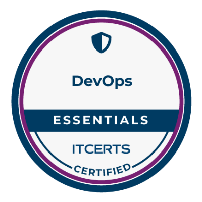

Fábio Bertolazzi
Analista de Engenharia de Software
Nascido em 1975, minha paixão por tecnologia teve um grande impulso com os jogos das décadas de 1980 e 1990. Esse interesse me levou a explorar computadores pessoais ainda na era dos PCs 286/386, realizando pequenos trabalhos e consolidando minha imersão no mundo digital. Sou casado desde 2000 e, como resultado dessa união, nasceram nossos maiores tesouros: Giuliana, em 2005, e Felipe, em 2011. Além da tecnologia, tenho grande apreço por viagens, leitura, cinema e corrida. E, é claro, os videogames continuam sendo uma das minhas paixões.
Histórico Profissional
Iniciei minha trajetória profissional em 1996, atuando em pequenas software houses, com Clipper como minha principal linguagem de programação na época. Sempre motivado pelo desejo de aprendizado, busquei aprimoramento contínuo por meio de cursos e formações complementares. Esse esforço resultou, em 2002, na minha seleção para atuar como desenvolvedor em uma empresa de recuperação de crédito que adotava tecnologias de ponta para o período, como Visual Basic 6.0 e SQL Server 2000. Com o crescimento da empresa — que expandiu mais de 50% em relação ao seu tamanho original — surgiram desafios tecnológicos significativos. Foi necessário estruturar estratégias para garantir a evolução das plataformas, assegurando soluções eficientes e alinhadas às necessidades dos clientes. Além disso, o cenário econômico, marcado pelo aumento da inadimplência, gerou uma crescente demanda pelo aprimoramento das soluções tecnológicas do setor. Em 2005, após um rigoroso processo seletivo, fui selecionado para ingressar como Analista de Sistemas Júnior no Unibanco. Desde então, atuei em diversas áreas da instituição, incluindo rentabilidade de unidades, tesouraria, risco de mercado e, mais recentemente, segurança da informação. Ao longo dos anos, enfrentei transformações significativas no setor financeiro e dentro da própria organização, como o processo de fusão, a implementação do CTMM, mudanças regulatórias, atualizações no SPB, reestruturações societárias, a horizontalização das equipes, a adoção de modelos baseados em comunidades, a modernização de sistemas legados e, mais recentemente, o impacto da inteligência artificial no setor. Essa trajetória me proporcionou um desenvolvimento profissional e pessoal contínuo, consolidando competências técnicas e estratégicas. Como resultado desse crescimento, conquistei reconhecimentos e promoções ao longo dos anos, chegando à posição atual de Analista de Engenharia Sênior. Ainda há muitos desafios e oportunidades pela frente, e sigo comprometido com a inovação e a excelência profissional.
Formação Acadêmica
Instituto de ensino Lavoisier
Técnico em processamento de dados
JUN/1998
Universidade São Judas Tadeu
Bacharelado em Sistemas de informação
DEZ/2004

Instituto de pesquisas tecnológicas - IPT/SP
MBA em gestão de negócios em tecnologia
JUN/2007
Lifelong Learning
Com o propósito de manter um aprendizado contínuo, tanto no âmbito pessoal quanto profissional, adoto uma abordagem estruturada que combina diversas ferramentas de desenvolvimento. Dentre elas, destaco a leitura de livros, o acompanhamento de podcasts e a participação em treinamentos que contribuem para o aprimoramento de competências, abrangendo tanto hard skills quanto soft skills. Abaixo, apresento alguns exemplos da minha trajetória de aprendizado, bem como conquistas relevantes ao longo desse processo.
Certificações

Livros
Treinamentos

Objetivo - Coordenador de Engenharia de TI
Alinhado à minha trajetória profissional e aos objetivos estratégicos da empresa, busco uma nova posição que me permita contribuir ainda mais para o crescimento organizacional e a excelência operacional. Ao longo da minha atuação como Tech Lead, adquiri ampla experiência na liderança técnica e estratégica de equipes, garantindo a entrega de resultados consistentes e sustentáveis. Minha trajetória inclui a formação e desenvolvimento de equipes de alta performance, participando ativamente de todo o ciclo de gestão de talentos — desde a seleção e contratação de novos profissionais até processos decisórios relacionados à movimentação de equipe. No âmbito da gestão de pessoas, promovi o alinhamento entre as expectativas dos colaboradores e os objetivos da empresa, por meio de uma comunicação transparente e orientada a resultados. Enfrentamos desafios constantes que exigiram respostas ágeis e assertivas, mantendo sempre o compromisso com a qualidade e a inovação. Dentre as principais iniciativas que liderei, destacam-se a modernização da plataforma, o gerenciamento de débitos técnicos, a mitigação de vulnerabilidades sistêmicas e a implementação de processos eficientes para o atendimento de chamados. Além disso, incorporamos boas práticas, como o uso de feature toggles, e desenvolvemos indicadores estratégicos para mensurar a evolução da equipe e da operação, sempre alinhados às diretrizes da empresa e da comunidade técnica. Estou motivado a continuar essa trajetória, agregando valor por meio de liderança, inovação e excelência na gestão de equipes e projetos.